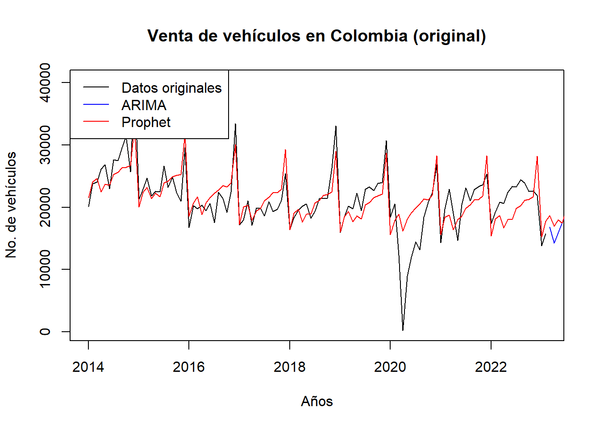

Chapter 7 Modelo Facebook Prophet
El modelo Facebook Prophet es una herramienta útil para el análisis y pronóstico de series de tiempo debido a su facilidad de uso, flexibilidad en la configuración del modelo, capacidad de manejo de tendencias y estacionalidades, robustez ante datos faltantes y anomalías, y la disponibilidad de herramientas de visualización y diagnóstico. Esto lo convierte en una opción popular para aplicaciones prácticas en una amplia gama de sectores, incluyendo finanzas, comercio electrónico, planificación de la demanda, entre otros.
Para nuestro caso de ventas de vehiculos en Colombia, iniciamos ajuste del modelo para evaluar la predicción con respecto al modelo Arima:
Creamos la serie de tiempo
Ajustamos el modelo ARIMA
Ajustamos el modelo Prophet
veh_data <- data.frame(ds = seq(as.Date("2014-01-01"), by = "month", length.out = 110), y = base$VEH[1:110])
prophet_model <- prophet(veh_data)Generamos pronósticos
horizon <- 12 # Número de períodos para pronosticar
# Pronóstico ARIMA
arima_forecast <- forecast(arima_model, h = horizon)
# Pronóstico Prophet
future_data <- make_future_dataframe(prophet_model, periods = horizon, freq = "month")
prophet_forecast <- predict(prophet_model, future_data)
# Convertir los pronósticos de Prophet a una serie de tiempo
prophet_forecast_ts <- ts(prophet_forecast$yhat, frequency = horizon, start = c(2014, 1))
# Graficar los pronósticos y los datos originales
plot(veh, xlab = "Años", ylab = "No. de vehículos", main = "Venta de vehículos en Colombia (original)")
lines(arima_forecast$mean, col = "blue", lty = 1)
lines(prophet_forecast_ts, col = "red", lty = 1)
legend("topleft", legend = c("Datos originales", "ARIMA", "Prophet"), col = c("black", "blue", "red"), lty = c(1, 1, 1))
7.1 Analisis de predicción de los Modelos
Al comparar los datos que predice cada modelo en el futuro, es evidente que el modelo Prophet presenta una mejor capacidad para capturar las fluctuaciones y patrones en la serie de tiempo de ventas de vehículos en Colombia. Los pronósticos generados por Prophet se ajustan más de cerca a los datos reales y reflejan de manera más precisa las tendencias observadas en la serie.
En contraste, los pronósticos del modelo ARIMA muestran ciertas desviaciones y no logran capturar completamente las variaciones en la serie de tiempo. Esto se puede observar al comparar las líneas de pronóstico en los períodos futuros. Mientras que los pronósticos de Prophet siguen de cerca las fluctuaciones y cambios en la serie, los pronósticos de ARIMA pueden estar más alejados de los valores reales y no reflejar con precisión las tendencias observadas.
Esto se confirma al evaluar las métricas de desempeño (MAE y RMSE), donde el modelo Prophet muestra valores más bajos en comparación con el modelo ARIMA. Un MAE y RMSE más bajo indica una mayor precisión en los pronósticos, lo que respalda aún más la superioridad de Prophet en términos de predicción de la serie de tiempo.
7.2 Evaluación del Modelo - MAE y RMSE
Calculamos MAE y RMSE para ARIMA
arima_forecast_values <- as.numeric(arima_forecast$mean)
mae_arima <- mean(abs(arima_forecast_values - veh))
rmse_arima <- sqrt(mean((arima_forecast_values - veh)^2))Calculamos MAE y RMSE para Prophet
mae_prophet <- mean(abs(prophet_forecast_ts - veh))
rmse_prophet <- sqrt(mean((prophet_forecast_ts - veh)^2))Imprimimos resultados
## ARIMA - MAE: 4910.315## ARIMA - RMSE: 6504.895## Prophet - MAE: 2330.432## Prophet - RMSE: 3220.9547.3 Comparación de los modelos ARIMA y Prophet:
Comparando los valores de MAE y RMSE, podemos observar que el modelo Prophet tiene un mejor desempeño en términos de precisión en los pronósticos en comparación con el modelo ARIMA. Esto se evidencia en los valores más bajos tanto en el MAE como en el RMSE para el modelo Prophet.
El MAE para el modelo Prophet es de 2330.432, lo que indica una menor diferencia absoluta promedio entre los valores pronosticados y los valores reales. Por otro lado, el MAE para el modelo ARIMA es de 4910.315, lo que implica una mayor diferencia promedio entre los pronósticos y los valores reales.
En cuanto al RMSE, el modelo Prophet también muestra un mejor desempeño con un valor de 3220.954, en comparación con el modelo ARIMA que tiene un RMSE de 6504.895. Esto indica que el modelo Prophet tiene una menor magnitud de error cuadrático medio en comparación con el modelo ARIMA.
Estos resultados sugieren que el modelo Prophet es más preciso en la predicción de la serie de tiempo de ventas de vehículos en Colombia, en comparación con el modelo ARIMA utilizado en este análisis.
En conclusión, en base a los resultados obtenidos, el modelo Prophet muestra un mejor desempeño en términos de precisión en los pronósticos para la serie de tiempo de ventas de vehículos en Colombia, con valores más bajos tanto en el MAE como en el RMSE.